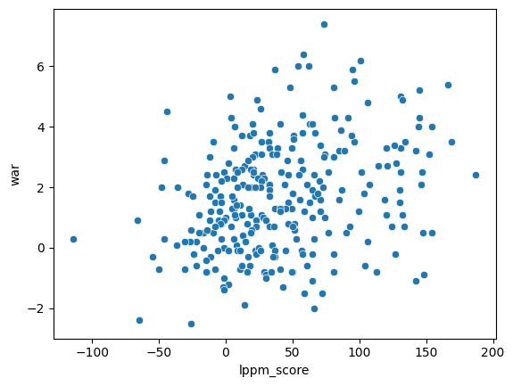
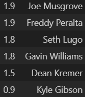

Attempting to Identify Breakout Players with Baseball Savant's Individual Pitch Metrics
In this project, I am attempting to identify potential breakout pitchers for the 2023 season using Baseball Savant's individual pitch metrics. This is a preliminary report, without many figures or complex analysis, though initial results were promising. In this report, I'll go by a step by step process of the analysis, leaving out details of how exactly the model works, but if you're interested contact me through email or text.
First, I want to outline my overall goals for this project. Specifically, I want to determine pitchers who's value is significantly higher than what would be suggested by their last year's WAR (AKA a breakout pitcher). My model is specifically made to do so, and I have no plans of suggesting that this model does anything else in this report. Secondly, I want to reduce the number of false negatives as much as possible without significantly hurting the performance of the model, meaning that we suggest more breakouts rather than fewer. Now then, everything's in place, so let's move on to some basic analysis.
After calculating what I've termed an "lppm score" for each player and season according to my model, I wanted to see if there was some linear relationship between the scores and WAR for the next season, which would indicate that the model was at least in some way accurate. As such, I plotted the two against each other, which you can see below.
Looking at this plot, it's clear there is some linear relationship between my lppm scores and WAR for the following season. This was promising, leading me to believe that lppm scores could be used to project pitcher success in some way, though definitely not confirmation of it's overall effectiveness in doing so.
Seeing that there seemed to be some relationship between the lppm scores and WAR, I decided to proceed with the method I had preplanned for this data, logistic regression. However, first I needed to determine the optimal value of the breakout pitcher threshold. After some trial and error, I temporarily settled on the value 1.8, as it provides a good balance of false negatives and overall error rate.
With my model, I achieved an accuracy of 65% on the test data. In comparison, doing the same method with last year's WAR as the predictor resulted in an accuracy of 61.5%. Interestingly, if the breakout pitcher threshold is increased from 1.8 to 2.2, the model achieves an accuracy of about 70%, while the model using last year's WAR has an accuracy of only 59%. These results are very promising, as they suggest that the model may indeed do a good job in suggesting very high WAR seasons, which was the main goal at the start of my research. However, the main idea I was interested in was the actual breakout selections themselves, which is why I eventually settled on 1.8 as the threshold (corresponding to a WAR of about 2.3).
With the threshold at 1.8, the model predicted 13 "breakout" pitchers (meaning their WAR the previous season was less than 2) over the past two seasons. Notable hits include Logan Gilbert and Shane McClanahan in 2022 and Jordan Montgomery and George Kirby in 2023. However, there were some major misses, notably Adrian Houser and Aaron Civale in 2022 and Adam Wainwright and Luis Severino in 2023. Overall though, I was happy with how many "suprise" predictions the model got correct.
In the end, only 3 pitchers who were predicted beneath the threshold had a WAR over 5 for the next season, which were the main false negatives I wanted to avoid. These were Alek Manoah, Aaron Nola, and Zac Gallen in 2023. Overall, very few for the overall size of the dataset.
So, on preliminary analysis the model looks promising, though more tests are definitely need to check its true accuracy. With that being said, here's the players that my model predicted would "breakout" in 2024, alongside their WAR in 2023:
Most notable on this list, at least to me, are Gavin Williams and Dean Kremer. Williams was a rookie last season and projects to take his game to the next level according to this model. On the other hand, Kremer is looking to bounce back from a poorer 2023 than his 2022 campaign, and the model predicts he will do so.
In the end, my preliminary statistical exploration of the model suggests it holds promise, but further analysis and refinement are definitely nessessary. The biggest problem with analyzing the model at the moment is the lack of data, as Savant's individual pitch info only goes back as far as 2019, and with a shortened 2020 season that leaves me with 3 usable years of data currently. I'll add some more models over the next few weeks to better explain things, but wanted to get this up now just to have it. Hope you enjoyed, and hmu with an email if you're interested with the intricacies of the model itself.